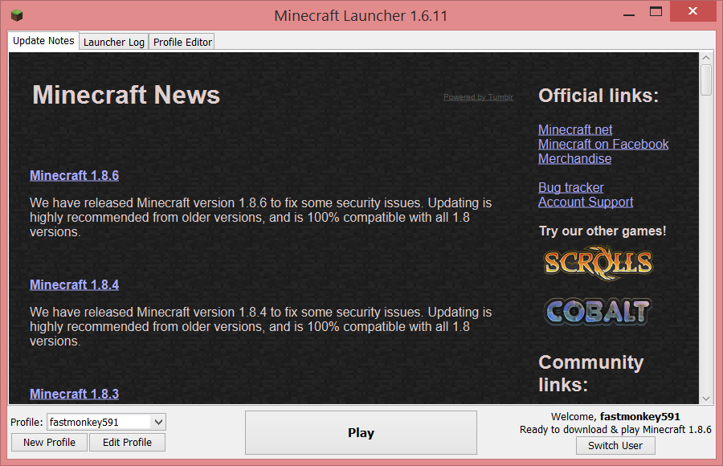
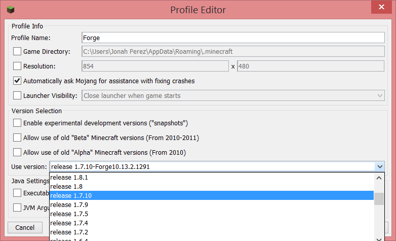
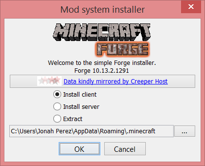
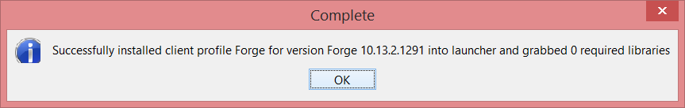
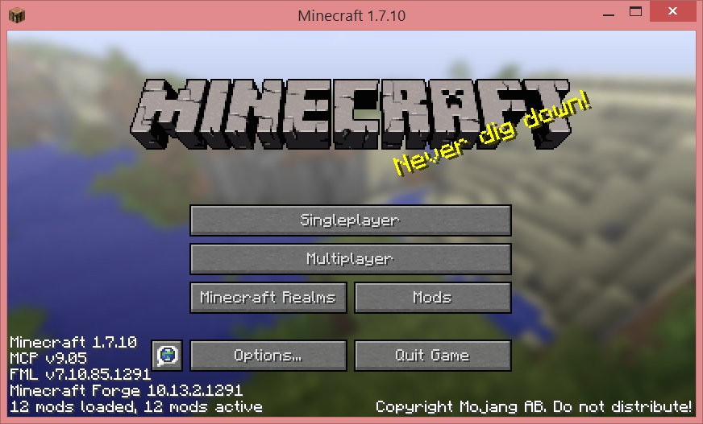
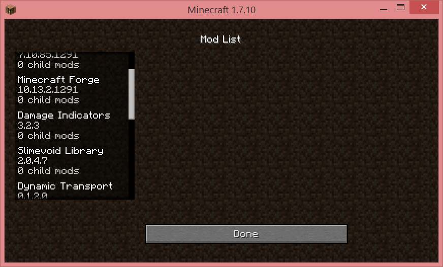

Installing Mods
I've struggled for many hours learning how to get mods installed on Elliot's
server. Below, I've outlined the basic procedure that's worked for us. This
should be the same procedure for Mac, Windows and Linux machines.
The first hurtle is making sure that you are running the appropriate
version of Minecraft for the mods you want to run. We've found that
the mods Elliot likes are mostly for the 1.7.10 release of Minecraft.
The good news is that the Minecraft launcher makes it easy to download
previous versions of the game.
- Install Minecraft 1.7.10 using the following steps:
- Start Minecraft
- Click on "Edit Profile"
- Change the "Use version:" dropdown to 1.7.10
- Start the game so it downloads the 1.7.10 version
- Close the game
- Run the Forge Mod Loader installers
- from a command prompt run java -jar forge-1.7.10-10.13.2.1291-installer.jar
- Once it's complete, close the window
- Add the mod jar files to the mods folder under your Minecraft home folderol
- In Windows: c:\Users\[username]\AppData\Roaming\.minecraft\mods
- In Mac: ~\.minecraft\mods
- In Linux: ~\.minecraft\mods





